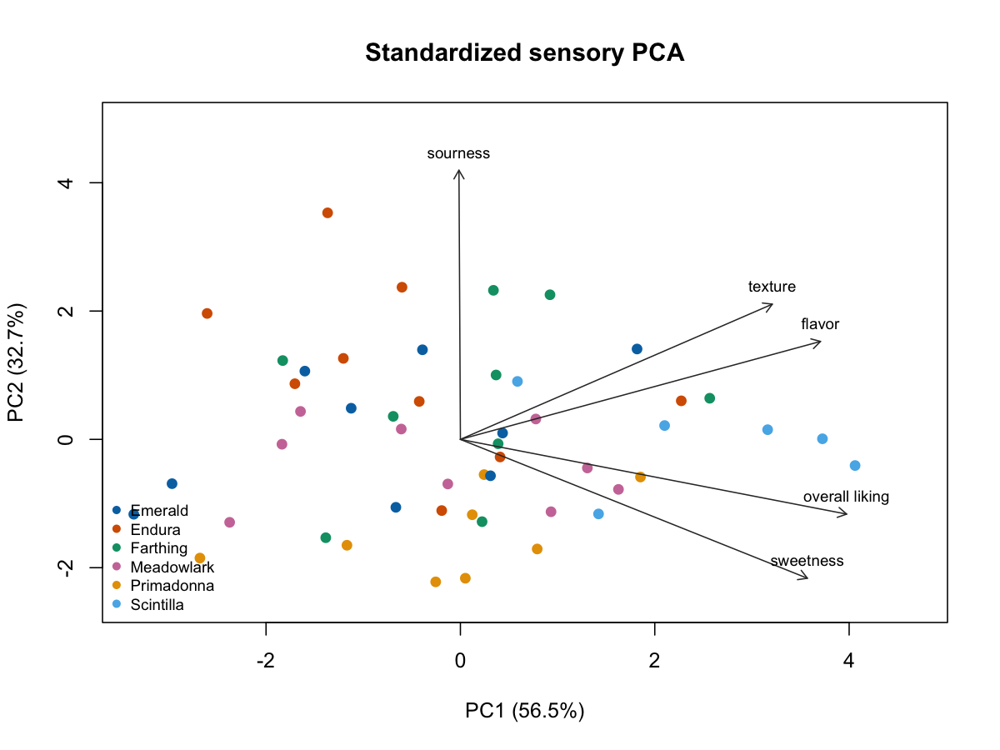

CC BY 4.0の公開データ50試料・9環境を、出典とライセンスを保持して分析。
Analyzed 50 samples across 9 environments from an open CC BY 4.0 dataset with provenance preserved.
公開コードPublic code
公開官能評価データの低次元構造とクラスタ妥当性を、環境単位の再標本化で検証した解析。
An open-data sensory analysis validating low-dimensional structure and cluster evidence with environment-level resampling.
技術スタック / Tech Stack
00

01
CC BY 4.0の公開データ50試料・9環境を、出典とライセンスを保持して分析。
Analyzed 50 samples across 9 environments from an open CC BY 4.0 dataset with provenance preserved.
PC1とPC2で分散の89.21%を説明し、環境ブートストラップでも低次元構造を確認。
PC1 and PC2 explain 89.21% of variance, with low-dimensional structure checked by environment bootstrap.
gap統計量がk=1を支持したため、自然クラスタの存在を過大主張せず外部検証と分離。
Because the gap statistic supported k=1, the analysis avoids claiming natural clusters and separates external validation.
02
多属性の官能評価に安定した潜在構造や自然な群があるかを過大解釈せず調べる。
Assess stable latent structure and natural grouping in multi-attribute sensory ratings without overinterpretation.
PCA、gap統計量、k-means、Ward法を用い、試験環境を分析単位として扱う。
Use PCA, gap statistics, k-means, and Ward clustering while treating trial environment as the resampling unit.
環境ブロックブートストラップとleave-one-environment-out評価で安定性と外部識別を分ける。
Separate structural stability from external discrimination using environment-block bootstrap and leave-one-environment-out evaluation.
強い低次元構造を確認した一方、離散的な自然クラスタを支持する証拠は得られなかった。
Found strong low-dimensional structure but no evidence supporting discrete natural clusters.
03
試料レベルに集約された評価であり、パネリスト差や因果効果は推定できない。
Ratings are aggregated at the sample level, so panelist heterogeneity and causal effects cannot be estimated.
04
公開コードPublic code
オープンライセンスのデータと完全なRワークフローを公開可能。
The openly licensed data and complete R workflow are suitable for public release.